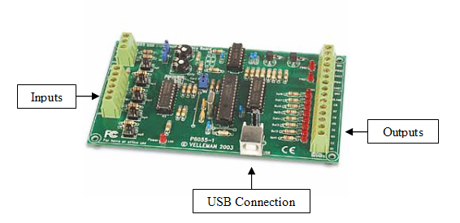

|
Home
| Profile
| Engineering Projects
| Designs
| Animations
|
STOVETOP COMMUNICATION DEVICE
|

The USB Module serves as a bridge between the PC and SSR and current switch. The current switch is wired the input of the USB module. The SSR is wired to the output of the module. The USB module is connected to the PC via USB (Universal Serial Bus). The board is powered by the 70 milliamps it receives through the USB connection and requires no independent power. The module has five digital inputs and 8 digital outputs, although only one of each is used. The purpose of the board is to relay instructions to the PC from the current switch and relay instructions from the PC to the SSR.
|
|